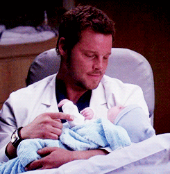

Quem ele é?
Alex Karev é o ex- chefe de cirurgia do Pacific Northwest General Hospital e ex- chefe de cirurgia pediátrica do Gray Sloan Memorial Hospital . Ele é pai de gêmeos, Alexis e Eli , com sua ex-esposa e atual companheira, Izzie Stevens. Ele também foi casado com Jo Wilson antes de descobrir sobre Eli e Alexis.
Infância
Quando Alex tinha sete anos, ele teve que começar a cuidar de seu pai bêbado e viciado em drogas. Nesse ponto, ele se
tornou o adulto da família, pois sua mãe era esquizofrênica. Alex descreveu a si mesmo como sendo "criado em um bar"
e que seu pai nunca o levou ao parque ou acampar.
Quando criança, Alex era gordo, e na 5ª ou 6ª série, as outras crianças começaram a importuná-lo por isso. Ele foi
xingado, pregado em peças e até mesmo empurrado para dentro de um armário uma vez. Ele então começou a se considerar
o garoto gordo da classe e o bagunceiro de casa. Foi um inferno para ele até o verão após a 8ª série, quando ele passou
todo o feriado de verão em sua bicicleta andando por toda parte. Ele perdeu tanto peso que as pessoas mal o reconheceram
quando as aulas começaram de novo.
Depois que o pai de Alex foi embora, ele cuidou da mãe e dos irmãos. Alex esteve em 17 lares adotivos diferentes no
decorrer de 5 anos. Ele também passou um tempo em detenção juvenil por roubar comida para sua família. Ele também
internou sua mãe em uma clínica psiquiátrica em um ponto. Quando ele tinha 12 anos, ele roubou um carro para ajudar
sua irmã mais nova, Amber.
Alex perdeu a virgindade com uma enfermeira da escola quando tinha 15 anos.
Ele perdeu o baile de formatura porque seu pai chegou em casa e estava bêbado e começou a quebrar as coisas na casa,
então Alex ficou em casa com ele. Ele tinha um par do baile de quem gostava e até deu uma pulseira para ela, mas
nunca mais falou com ela porque sentiu que a levantou e pensou que ela não iria querer falar com ele novamente.

Em algum momento, Alex mudou legalmente seu sobrenome para Karev, o nome de solteira de sua mãe, para se dissociar de
seu pai, James Evans.
Depois que a avó de Alex morreu, ele teve um sonho em que ela lhe dizia para não brincar com seus papéis.
Ele frequentou a faculdade na Universidade de Iowa, onde lutou.
Personalidade
Apesar da imagem insensível que ele projeta, Alex é particularmente afetado quando trata viciados e crianças abusadas
por causa de sua história de infância. Ele inicialmente se recusou a instalar uma linha central para um viciado em
Demerol porque não queria alimentar seu vício. Ele também conseguiu se conectar com um adolescente cujo pai abusivo
batia na mãe.
Ele esconde sua dor atrás de uma máscara de agressão e má atitude. Por um tempo, ele afastou todo mundo, mas desde que
entrou na pediatria, ele mostrou mais de quem ele realmente é. Depois que Cristina saiu, ele agiu como a pessoa de
Meredith, o que mostra um lado diferente de sua personalidade, que o mostra como doce, atencioso e compassivo.